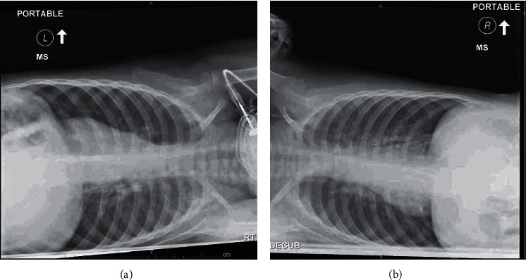

Ficha del catálogo
Aspiración de cuerpo extraño en la vía aérea
- Sistema
- Respiratorio
- Modalidad
- RX
- Región
- Tórax pediátrico
- Dificultad
- Intermedio
Situación frecuente en niños pequeños que se produce al inhalar alimentos u objetos, con predilección por el bronquio principal derecho por su trayecto más vertical. La mayoría de los cuerpos extraños no son radiopacos, por lo que el diagnóstico se apoya en signos indirectos. La sospecha clínica y el episodio de atragantamiento son determinantes.
Técnica
Radiografía de tórax en inspiración y en espiración, o proyecciones en decúbito lateral en niños que no colaboran, buscando el atrapamiento aéreo unilateral.
Qué observar
- Hiperclaridad de un hemitórax que no se modifica en espiración
- Desplazamiento del mediastino hacia el lado sano durante la espiración
- Atelectasia distal cuando la obstrucción es completa
- Cuerpo extraño radiopaco visible, que es la minoría de los casos
- Asimetría de la trama vascular entre ambos pulmones
- Consolidación o bronquiectasias en aspiraciones antiguas no diagnosticadas
Hallazgos
Atrapamiento aéreo unilateral con hiperclaridad persistente en espiración y desplazamiento mediastínico contralateral, o atelectasia distal según el grado de obstrucción.
Perlas
Como la mayoría de cuerpos extraños son radiotransparentes, una radiografía normal no descarta nada. La comparación entre inspiración y espiración es lo que revela el mecanismo valvular que atrapa el aire.
Diagnóstico diferencial
- Enfisema lobar congénito
- Hiperinsuflación lobar en el lactante sin antecedente de atragantamiento.
- Neumotórax
- Línea pleural visible con ausencia de trama vascular periférica.
- Asma con atrapamiento
- Hiperinsuflación bilateral y simétrica.
Simuladores
- Rotación del paciente que crea asimetría de densidad
- Espiración parcial en la proyección estándar
- Atelectasia por moco
Por modalidad
- RX
- Detecta signos indirectos de atrapamiento
- TC
- Localiza el cuerpo extraño y valora la vía aérea en casos dudosos
Protocolo
Radiografías en inspiración y espiración, o dos proyecciones en decúbito lateral en el niño no colaborador.
Clasificación
Errores frecuentes
- Descartar la aspiración por una radiografía inspiratoria normal
- No obtener la serie espiratoria o los decúbitos
- Interpretar la asimetría por rotación como atrapamiento real

cuerpo extrano aspiracion atrapamiento aereo pediatria espiracion bronquio derecho